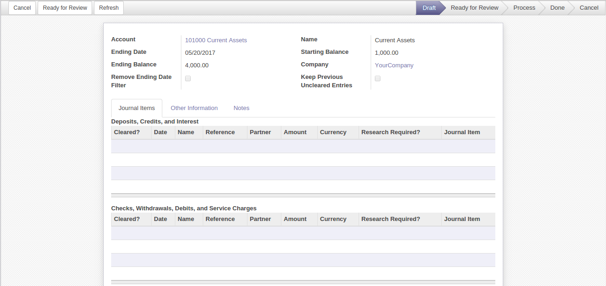

<section class="oe_container">
    <div class="oe_row oe_spaced">
        <h2 class="oe_slogan">Accounting</h2>
        <div class="oe_span6">
            <div class="oe_demo oe_picture oe_screenshot">
                    
            </div>
        </div>
        <div class="oe_span6">
            <br>
            <br>
            <h3 class="oe_slogan">The Graphical overview</h3>
            <p class='oe_mt32'>
            By given configuration Users will be able to validate and indicate if a transaction has "Cleared the Bank" 
            using a checkmark on a new Reconcile Financial Account Statement view on each individual financial transaction.
            Users will also be able to mark transactions on a bank account for future research.
            </p>
        </div>
    </div>
</section>